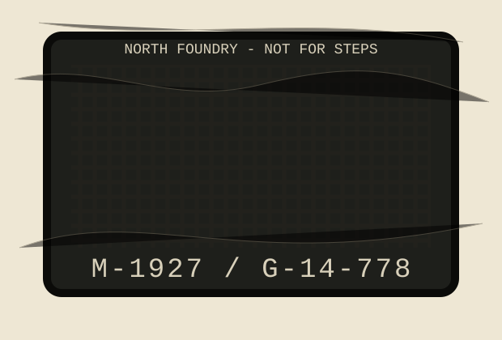

Numbers below are from rubbings taken with newsprint, sidewalk chalk, and one invoice for snow fence. The foundry marks are shallow because the pattern maker liked elegant letters more than maintenance crews.
| Serial | Corner | Slot condition | Remark |
|---|---|---|---|
| G-14-778 | Mill / Thistle | two ribs polished | bus spray reaches bakery glass |
| G-14-779 | Mill / Organ | leaf mat under east lip | hears C-7 during storms |
| G-15-022? | School rear lane | cracked at lifting eye | number obscured by tar star |
| M-1927 | Foundry lot | stored upside down | used as picnic table, 1944 |
Do not oil grate hinges. There are no hinges. This instruction remains because removing it caused three phone calls and a poem.
Next card in box: municipal water table field card 11.